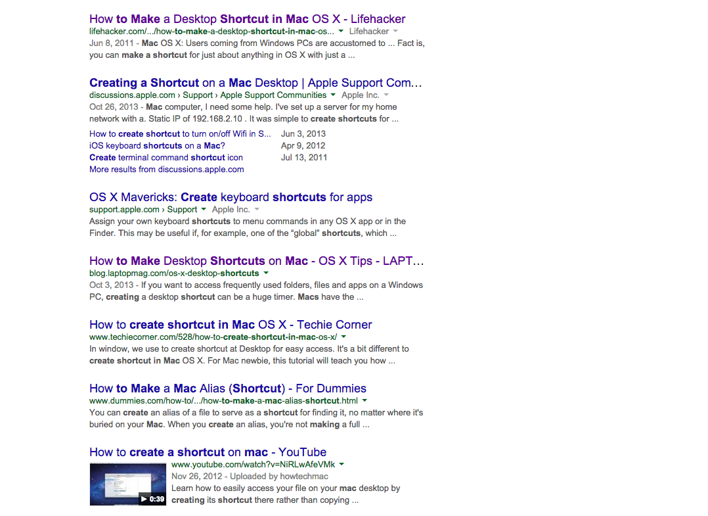
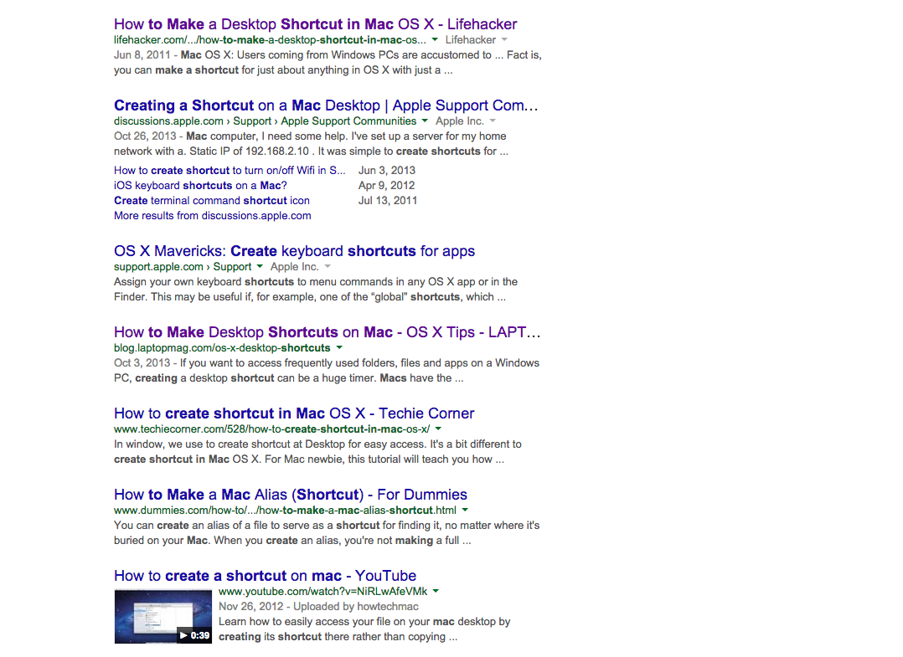

https://ondemand.quepublishing.com/CreatingAliases.html
PearsonTo save some time, you can create shortcuts to the items you use frequently. Aliases are shortcuts that point to a folder or file … When you create an alias to a folder or file, the icon includes a little arrow in the lower-left corner …
 
